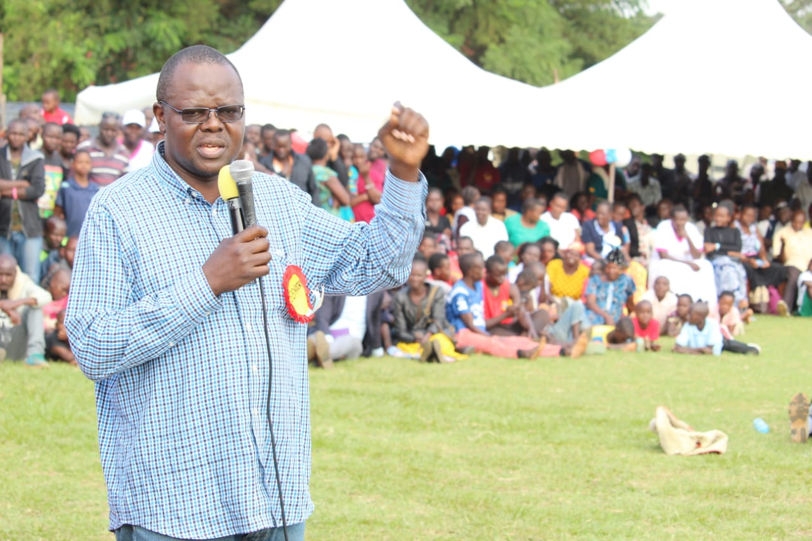
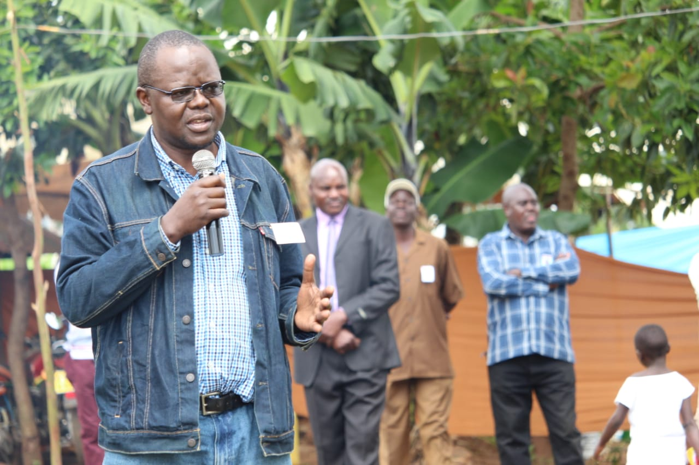

THE FOCUS

OVERSIGHT
OVERSIGHT
Exercising oversight over national revenue allocated to the county government by ensuring there is prudent use and accountability.

LEGISLATION
LEGISLATION
Participating in the law-making function of Parliament by considering, debating and approving Bills concerning counties, as provided in Articles 109 to 113 of the constitution.

COUNTY INTERESTS
COUNTY INTERESTS
Representing the county and serve to protect the interests of the county governments by determining the allocation of national revenue among counties, as provided in Article 217 of the constitution.
(c) 2019 | Sen. Dr. Ochilo G.M Ayacko, MP. Migori County | Tel: +254 20 2221291 | Email: ochilog@gmail.com |